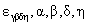

До этих пор мы сравнительно подробно рассматривали мезонные состояния как в рамках унитарной симметрии, так и в рамках кварковых моделей. Теперь мы вернемся к унитарной симметрии SU(3) и ктрехкварковой модели с кварками u,d,s и построим в этой модели барионы. Для образования барионов требуется минимум три кварка, поэтому трижды перемножим низшее спинорное представление 3 само на себя и поищем в разложении неприводимое представление размерности 8: 3×3×3 = 10 + 8 + 8' + 1. Как видно, 8 входит даже дважды, и можно смело продолжать построение октета барионов из кварков. Разложить произведение трех спиноров на сумму неприводимых представлений сложнее, чем то, что мы делали в случае мезонов. Аккуратно симметризуя и антисимметризуя по всем индексам, построим искомое разложение:
(2.27) |
Здесь все индексы пробегают значения от 1 до 3. Тензоры со смешанной
симметрией размерности 8 можно перевести в тензоры более привычного вида , использовав
абсолютно антисимметричный тензор 3-го ранга.
Симметричный тензор 3-го ранга имеет размерность
и для n = 3
|
(2.28) |
так как Det U =1. (Аналогично для  213 etc.)
213 etc.)
Например, частично асимметричный 8-мерный тензор
тогда, к примеру, для протона p =
(2.29) |
А октет барионов на основе частично симметричного
8-мерного тензора 
Для протона
(2.30) |
Для того, чтобы построить полностью симметричную волновую
функцию по спину и унитарному спину через кварковые волновые функции
определенного аромата и определенной проекцией спина, следует построить волновую
функцию, симметричную относительно всех возможных перестановок ароматов и
проекций спина кварков данного бариона. (Что до антисимметрии волновой
функции бариона в целом, это мы возложим на цветные степени свободы.)
Перемножив спиновые волновые функции (1.42, 1.44) волновые функции по унитарному спину
(или ароматовые волновые функции) (2.29, 2.30) получаем:
(2.31) |
Взяв опять в качестве примера протон
(2.32) |
Использованы обозначения
и т.д.
Важное замечание. Можно уверенно использовать вместо (2.31) более короткую формулу, но при условии, что уже нельзя переставлять ни ароматы, ни проекции спинов кварков!
(2.33) |
Волновая функция изосинглета  имеет другую
структуру, что легко видеть из расчетов
имеет другую
структуру, что легко видеть из расчетов
(2.34) |
Декуплет барионных резонансов c JP = 3/2+ который мы запишем в виде так называемой весовой диаграммы (графическое представление базиса представления группы SU(3) в плоскости двух параметров, характеризующих элементы базиса, в нашем случае- 3-й проекции изотопического спина I3 по оси абсцисс и гиперзаряда Y по оси ординат), которая для декуплета имеет вид треугольника:
имеет, таким образом, следующее кварковое содержание:
ddd udd uud uuu
sdd sud suu
ssd ssu
sss
В группе SU(3) весовые диаграммы всех представлений имеют вид шестиугольников или треугольников и часто удобны в приложениях. Для октета весовая диаграмма имеет вид шестиугольника, причем в центре содержится элемент кратности 2:
или через кварковое содержание барионов:
udd uud
sdd sud suu
ssd ssu
С открытием шарма встал вопрос о поиске шармовых барионов. Они были вскоре
открыты. Сейчас уже известны (2285.1+0.6МэВ),
(2625.6+0.8МэВ), (2455), (2465). Попробуем их расклассифицировать
по представлениям групп SU(4) и SU(3) . Перемножим трижды спиноры qα,
α = 1, 2, 3, 4 размерности 4. Тензорная
запись совпадает с приведенной выше для группы SU(3) . Но размерности
представлений, конечно, другие: 4 × 4 × 4
= 20' + 20 + 20 + . Симметричный тензор 3-го ранга
размерности
Довольно просто получить такого рода разложения через
размерности соответствующих представлений. Действительно, почти очевидно, что
4-спинор SU(4) редуцируется в сумму НП SU(3) как 44 = 33 + 13.
Таким образом, произведение (1.34) при n = 4
44 x 44 = 104 + 64
сведется к
(33 + 13) х (33 + 13)
= 33
х 33 +3_3 х 13 + 13 х 33 + 13
х 13 =
= 63 +
Антисимметричный тензор 2-го ранга  =n(n-1)/2,
=n(n-1)/2, =
n(n + 1)/2,
=
n(n + 1)/2,
64
= 33
= (
Поскольку разложение 20'4 уже известно, легко получить разложение 204:
204 = 104 x 44 - 20'4 = 103 + 63 + 33 + 13.
Тензорное счисление с
Итак, в 204-плет составной частью входят 10
барионных резонансов. Что касается шармовых барионов 3/2+, то
пока есть только два кандидата: c(2520)
и Ξc(2645) (но JP не измерено; значение 3/2+ -
это предсказание кварковой модели). Отметим между прочим, что значение JP
гиперона  -, открытого в 1964 г. и
явившегося триумфальным подтверждением SU(3), не измерено до сих
пор, т.е. в течение более 40 лет! Тем не менее все уверенно полагают, что его
спин-четность есть 3/2+.
-, открытого в 1964 г. и
явившегося триумфальным подтверждением SU(3), не измерено до сих
пор, т.е. в течение более 40 лет! Тем не менее все уверенно полагают, что его
спин-четность есть 3/2+.
А барионы 1/2+ входят в 20-плет, описываемый
тензором 3-го ранга антисимметричном по двум индексам в
квадратных скобках:
α, β,
γ, δ,
η = 1, 2, 3, 4. Этот 20'4-плет редуцируется по представлениям группы SU(3) как 20'4 =
83 + 63 + 33
+3.
Удобно выбрать редукцию по -мультиплетам с одинаковым значением шарма. В 8-плет
с С = 0 естественно поместить обычный октет барионов из кварков u,d,s (2.1).
В триплет входят неоткрытые еще барионы с С = 2
с кварковым содержанием
ccd ccu
ccs
Например, волновая функция
(2.35) |
В антитриплет входят открытые уже барионы с С = 1
с кварковым содержанием
udc
dsc usc
и, например волновая функция
(2.36) |
В шестиплет входят частично открытые барионы с С = 1
(из них на опыте известен только верхний изотриплет) с кварковым содержанием
ddc udc uuc
dsc usc
ssc
и, например волновая функция
(2.37) |
Обратим внимание на то, что в группе SU(4) по синглетному
представлению преобразуется абсолютно антисимметричный тензор 4-го ранга , поэтому
антисимметричный тензор 3-го ранга в SU(4) = 1, 2, 3, 4
преобразуется не по скалярному представлению как в
SU(3) (что доказывается в SU(3) сверткой с тензором = 1, 2, 3, а по
сопряженному спинорному представлению
(что опять-таки доказывается сверткой с тензором ,
 = 1, 2, 3, 4).
= 1, 2, 3, 4).
Мы возвращаемся к задаче разложения НП некоторой группы по
НП меньшей группы, в частности, по представлениям произведения двух меньших
групп. Хорошо известным примером является является группа
6
× 66
= 356 +16 = (
=(8 + 1, 3 + 1) = [(8,1) + (8,3) + (1,3)] + (1,1),
таким образом, в 356-плете оказывается точно 8 мезонов нулевого спина, 9 = 8 + 1 векторных мезонов, кроме того, есть еще один мезон в качестве синглета SU(6). Этот результат полностью согласуется с данными по легким мезонам (условно из кварков u,d,s). Чтобы продвинуться дальше, образуем произведение двух 6-спиноров в соответствии с нашими формулами, выделив в произведении спиноров симметричный и антисимметричный тензоры 2-го ранга:
66 ×
66 = 216 + 156 = (3,2)
× (3,2) =(3
× 3, 2
× 2) =
= (63 +
причем размерности симметричного тензора 2-го ранга есть n(n + 1)/2, а
антисимметричного -
156 x 66 = 206 + 706
= [(63,1) + (
= (6 x 3, 2)+(
= [(8,2) + (1,4)]20 + [(8,4) + (10,2) + (8,2) + (1,2)]70.
А произведение 216 x 66 распадается в сумму НП 3-го
ранга, один из которых симметричен по всем трем индексам с размерностью (NSSS = n(n
216 ×
66 = 566 + 706= {(63,3)+(
= (63 × 33,3 ×
2)+(
= {((8,2) + (10,4))}56 + [(8,2) + (1,4)]20 + [(8,4) +
(10,2) + (8,2) + (1,2)]70.
Мы воспроизвели знаменитый результат SU(6), что в одном НП
размерности 566 помещаются октет барионов спина 1/2 и декуплет
барионных резонансов спина 3/2! Отметим, что кварковая модель со всеми равными
параметрами кварков, как-то массы, магнитные магнитоны и т.п., прямо
воспроизводит модель SU(6), как, впрочем, это и должно быть. В некотором смысле
3-кварковая модель дает способ расчетов, альтернативный тензорному счислению в
рамках группы.
Несколько слов о разложении НП некоторой группы по НП суммы
меньших групп. Мы уже рассматривали пример разложения НП SU(4) по НП SU(3). Для
дальнейших приложений нам может понадобиться разложение НП группы SU(5) по
представлениям прямой суммы групп SU(3) + SU(2). В этом случае запишем 5-спинор
SU(5) в виде прямой суммы: 55 = (33,1) + (13,2).
Образуя произведение двух 5спиноров, получаем:
53 x 53 = 153 + 103
= (33,1) + (13,2) x (33,1) + (13,2)
=
= (33 x 33,1) + (33,2) + (33,2) + (13,2
x 2) =
= {(6,1) + (33,2) + (1,3)}15 + [(33,2) + (
Таким образом, НП SU(5) размерностей 5 и 10 редуцируется в сумму НП SU(3) + SU(2):
55 = (33,1) + (13,2),
105 = (33,2) + (
В этом случае достаточно легко получить эти разложения и с помощью тензорного счисления.